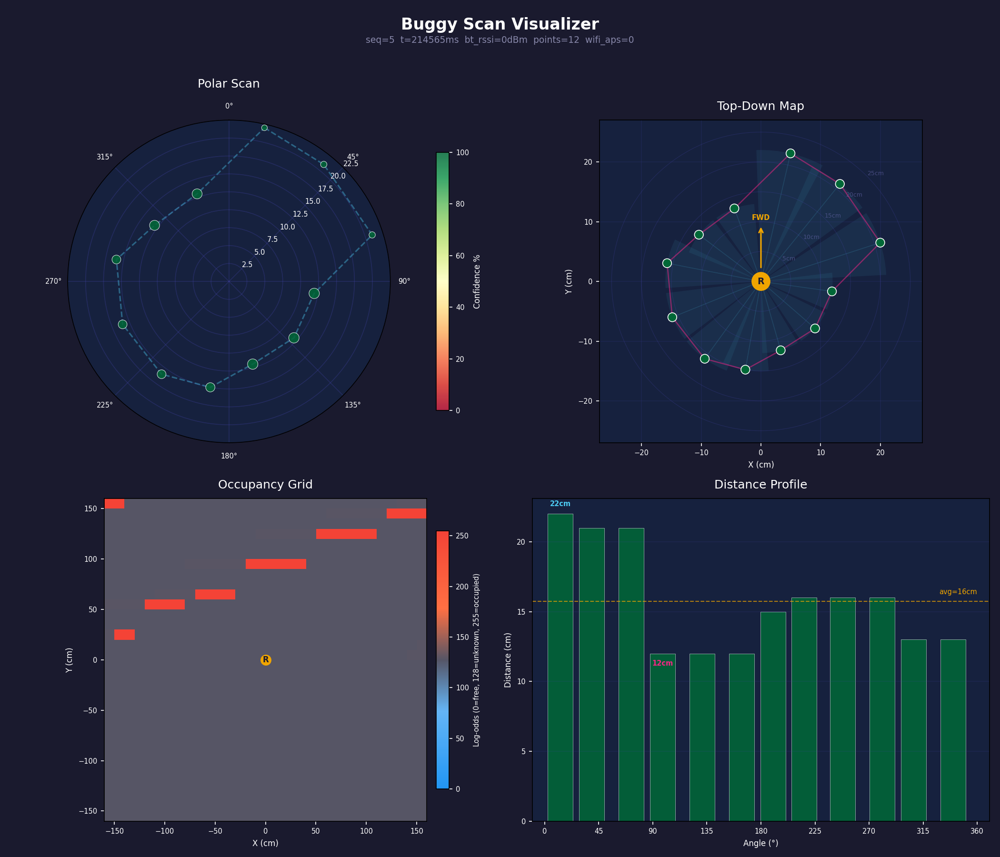

When a few points become a room
Give a little robot a way to sense what is nearby, then put its readings on a screen. A few coloured points become a shape. Soon it is tempting to see a room.
The display has made a powerful suggestion from a modest collection of readings.
That is the interesting part of our Kitronik buggy experiment. The machine has an ultrasonic sensor, a pair of motors and a way to report what it has found. Python tools give those reports a form someone can look at. Somewhere between the sensor and the picture, a design question appears: how much certainty should a map be allowed to borrow from its own appearance?
Leave the unseen space open
The current firmware starts its grid at a neutral prior. A cell has not become an empty piece of floor simply because nothing has been drawn there.
As scans arrive, the map accumulates evidence. Traversed parts of a sensor beam receive free-space updates. Its endpoint receives occupied-space updates. Confidence affects the contribution. Overlapping observations can strengthen or revise the picture.
The distinction matters to the person reading it. Free, occupied and undecided are three different answers. A quiet neutral region leaves the question visible. Filling everything with reassuring space would make the picture easier to like and harder to trust.
01 / FREE
Evidence of free space.
The stored value is below 80. Observations have moved it toward free.
02 / UNCLASSIFIED
A question remains.
Values from 80 through 170 stay unclassified. The starting value is 128.
03 / OCCUPIED
Evidence of an obstacle.
The stored value is above 170. Observations have moved it toward occupied.
In the Python scan viewer, the neutral region occupies most of the saved example. In the camera overlay, unclassified cells remain unpainted while free and occupied classifications add colour. Those are two ways to let uncertainty survive the drawing.
The drawing has a point of view
A polar plot shows readings around the sensor. A top-down view turns them into a shape. An occupancy grid shows accumulated belief about space. The distance profile makes individual readings easier to compare.
The saved-scan visualizer puts these views beside each other. They share an input, but each makes something easier to notice. A gap can be obvious in one and disappear into the overall impression of another.


That is useful. A companion view can question the attractive one.
It also gives the display a responsibility. The reader should be able to understand what the marks represent, which frame they belong to and whether they came from a current observation or a saved example.
The robot moves and the room should stay put
The current grid belongs to a world frame, with an origin at the start. The robot’s estimated position changes inside it. Keeping the map in that frame lets observations from different positions accumulate into one place.
But position is part of the estimate too. This experiment uses motor-time kinematics with selective heading correction. A camera marker provides another estimate of where the robot might be, connected to the map through calibration.
The overlay can draw the two trails together, making their disagreement available to inspect. The interesting design opportunity is a display that gives someone a way to notice when the alignment deserves another look.
Let the picture stay provisional
There is pleasure in a little machine slowly giving a space a shape. Colours, rays and a moving marker can make an otherwise difficult stream of numbers approachable.
The display earns that pleasure when its limits remain readable: where it has evidence, where it has an estimate and where it still has a question.
That is what we would test next. Ask someone to point out the parts the robot has not established. Ask which position they believe, and why. Show an old reading beside a new one. Watch what they infer from a blank area.
The map does not have to settle every doubt. It has to leave room for the useful ones.